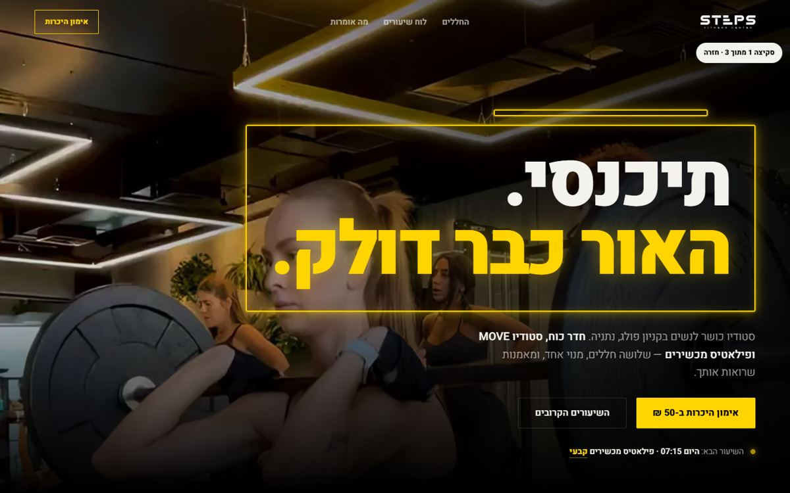
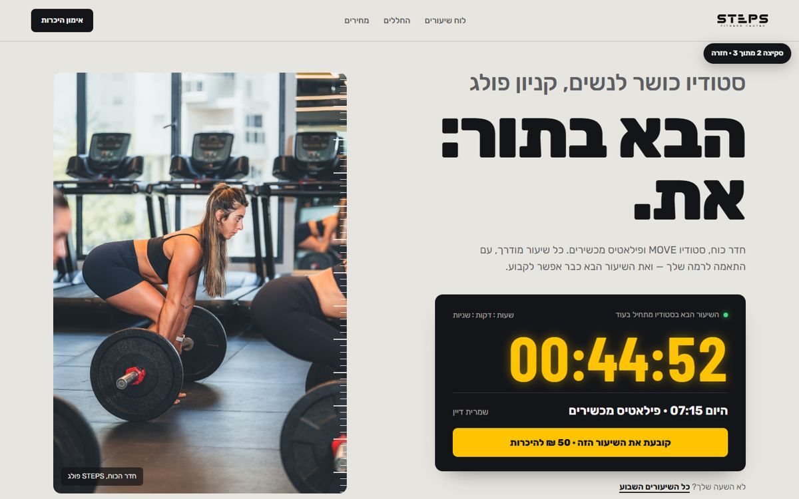
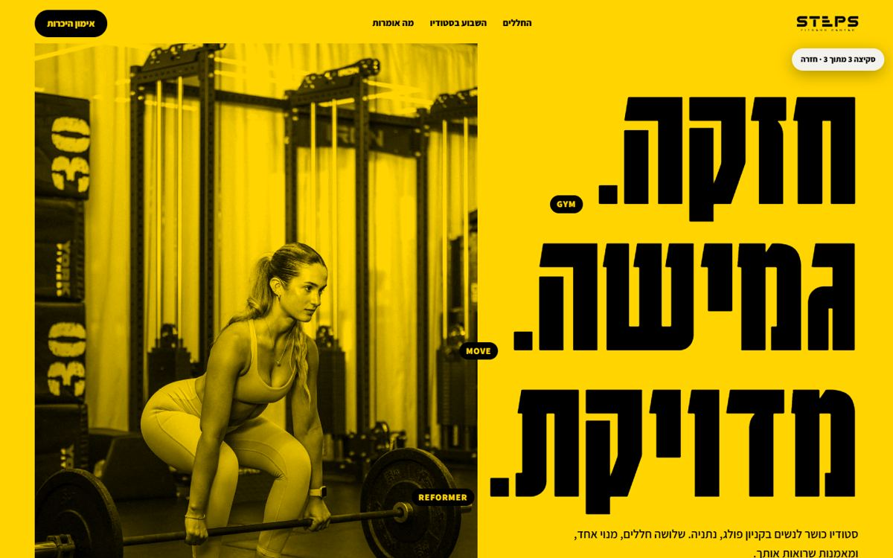

Equinox
רשת יוקרה אמריקאית. שחור, הרבה אוויר, צילום של המקום עצמו, כותרות דקות וגדולות.
הלקח: יוקרה = לתת לצילום לנשום.חקרתי את האתרים של הסטודיואים בנתניה ואת האתרים של רשתות הבוטיק המובילות בעולם. מזה יצאו 3 כיווני עיצוב שונים באמת. כל אחד בנוי מהצילומים, המחירים, הביקורות והשיעורים האמיתיים של סטפס.
נכנסתי לכל אתר שמצאתי, בטלפון ובמחשב.
| סטודיו | מה מציעים | האתר |
|---|---|---|
| Top Pilates קריית השרון | פילאטיס מכשירים בלבד | תבנית בגווני בז', תמונה בסגנון מאגר בפתיח, טקסט זמני שנשכח בעמוד. יש מחירים. |
| StayFit קריית השרון | נשים בלבד: רפורמר ואימון פונקציונלי | תמונת מאגר בפתיח, כותרות זמניות ושגיאות כתיב, טופס יצירת קשר כפול. אין הזמנה ישירה. |
| MY WAY, רבו | פילאטיס, יוגה, כוח | מופיעות במדריכי עסקים, אבל לא מצאתי להן אתר עצמאי. |
| STEPS קניון פולג | שלושה חללים: כוח, MOVE (כולל בר) ופילאטיס מכשירים | צילום ווידאו מקצועיים מהסטודיו, לוח שיעורים חי, הזמנה ישירה לשיעור, ביקורות גוגל אמיתיות. |
היום אנחנו כבר לפניהן. באף אחד מהאתרים שבדקתי אין וידאו אמיתי מהסטודיו, לוח שיעורים חי או אימוני בר. האתר החדש לא צריך לנצח אותן — הוא צריך להיראות כמו ליגה אחרת.
רשת יוקרה אמריקאית. שחור, הרבה אוויר, צילום של המקום עצמו, כותרות דקות וגדולות.
הלקח: יוקרה = לתת לצילום לנשום."החדר האדום": צבע תאורה אחד שהפך למותג. מקטע מרכזי "מה מחכה לך באימון הראשון".
הלקח: סימן אחד שמזהים מיד.מועדון לונדוני. וידאו קולנועי כהה, ותאורת התקרה של החדר משמשת כמוטיב בעיצוב.
הלקח: האווירה של החדר היא המוצר.כותרת קצרה ובוטה, כפתור הזמנה אחד בולט, ולוח נושאים חודשי לאימונים.
הלקח: פחות מילים, פעולה אחת ברורה.לכל המותגים הגדולים יש סימן אחד שמזהים מיד. לסטפס כבר יש סימן כזה, ואף אחד עוד לא השתמש בו: מסגרות האור הצהובות בתקרת חדר הכוח.
כל סקיצה היא דף בית שלם שאפשר לגלול וללחוץ בו. כדאי לפתוח מהטלפון.



להתחיל מ"החדר הצהוב", כי הוא בנוי על הסימן הייחודי של סטפס. לשלב בו את לוח השיעורים בסגנון "לוח המראות" מסקיצה 2, ואת הפוסטרים מסקיצה 3 לקמפיינים ולדפי הנחיתה של המודעות. ההחלטה שלך — זה טעם.
בסקיצות לוח השיעורים הוא צילום אמיתי מארבוקס של השבוע 11–16.10. באתר עצמו הוא יתעדכן כל 5 דקות. דפים פנימיים, נגישות מלאה ו-SEO ייבנו אחרי שתבחר כיוון.